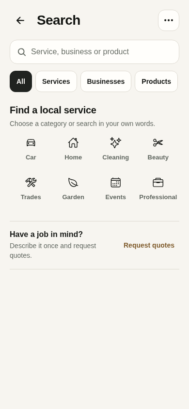
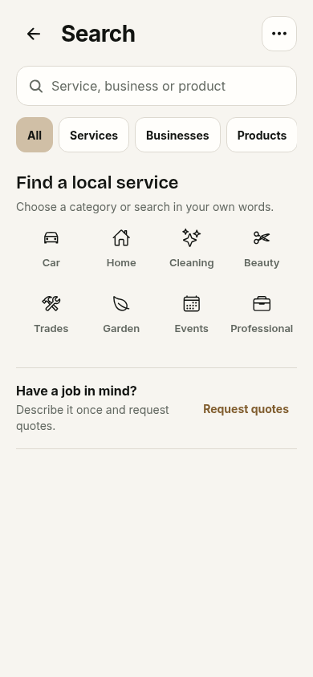

Everest Local typography
Six actual app screens at 390 × 844. Updated captures come from the hosted preview at commit 5961abd. The baseline is the retained pre-font discovery export. Native device rendering is not represented.
Business, product, chat and Today use explicitly labelled transport fixtures. These are visual checks, not real businesses/accounts or transaction tests. Home and Search are signed-out public surfaces.Search and marketplace
Before
Bricolage + Inter / beige palette
320 px check · Dark mode